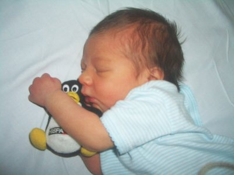
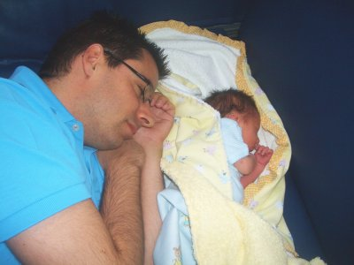

 
El día 7 de agosto de 2007 acabo de ser padre 🙂 Mi hijo Juan ha nacido,
y como se puede ver en las fotos tiene pinta de friki.
Desde el primer momento ha sentido una atracción hacia los pingüinos 😉
Como buen friki, duerme por la mañana y se reactiva por la noche 😉
{kind=link}
{kind=link}
{kind=link}
11 thoughts on “Ha nacido un friki”
Comments are closed.
Enorabuena Obijuan 😀
Enhorabuena!! ¿Llegan los niños frikis con una pda bajo el brazo?
Wow, enhorabuena!! :-))
Me añado al coro de enhorabuenas!! que sorpresa!
¿heredara tu traje de soldado imperial?
¿que distro trae instalada?
FELICIADADES!!!, se parace mucho a ti jeje:P.
Muchas muchas muchas felicidades, seguro q vas a ser un PADRAZO, un PADRAZO friki, pero al fin y al cabo un PADRAZOO
Felicidades Juan!!! Se te parece mucho… y no sólo por la afición a los pingüinos!
Tio, tu hijo es lo más friki que has hecho!. ¿Quantos grados de libertad tiene?, ¿y autonomía?. ¿Es modular?. ¿Se le puede poner un brazo en una pierna a ver que pasa?. ¿Lo has probado con la wii?. jajaja. Enhorabuena!!!!!.
Alejandro
Felicidades Juan! Eso de ser padre debe ser como construir un robot!
Conjuntamente con un amigo fundador de la red de blogs Teoriza y experto en posicionamiento SEO de blogs y comunidades en Google hemos creado una página neutral de blogs de roboteros que linke todos los blogs de robótica que reunan una cierta calidad, para estar en contacto entre nosotros y subir posiciones todos en los resultados de Google, e intentar crear una cierta comunidad robotera.
Hemos añadido tu blog que sin duda es de los mejores que existe en esta temática.
La página es esta:
http://www.teoriza.com/blogs-de-robotica-personal.php
Se recomienda añadir en cada blog el código HTML que aparece en esta página y que linka a la misma, pero no es obligatorio. Creo que es una iniciativa muy buena y que nos va a beneficiar a todos aportando tráfico y contactos, y puedes recomendar que aparezca y se linke algún blog de calidad de robótica personal que conozcas.
Saludos cordiales,
Toni
http://blog.ro-botica.net
Felicidades, papaito!
Vaya, veo que todo el mundo te ha felicitado…
¡Ya lo hice por mail, peor no quiero ser menos por aqui!
Muchas felicidades FrikiPadre, a ver cuando lo vemos con algun juguete friki entre las manos…